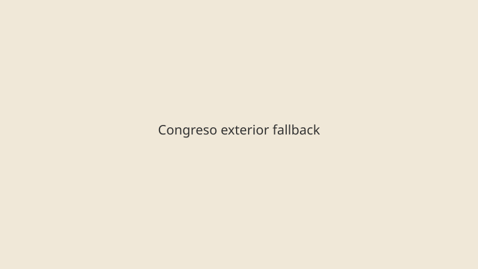

España · Elecciones · 14 de noviembre de 2026
La campaña del 29N continúa con actos de Sánchez, Feijóo y Abascal

Lo que coinciden los medios
La campaña electoral para las elecciones generales del 29 de noviembre de 2026 está en curso. El presidente del Gobierno, Pedro Sánchez, ha intervenido en actos públicos pidiendo una participación del 75 % para alcanzar 176 escaños. Alberto Núñez Feijóo, líder del PP, y Santiago Abascal, líder de Vox, realizan mítines en distintas ciudades. Las encuestas publicadas por varios institutos sitúan al PP en primer lugar, seguido del PSOE y de Vox. El bloque de derecha aparece cerca o por encima de la mayoría absoluta en varias mediciones. Los temas principales citados son vivienda, economía, inmigración y el balance de la legislatura actual.
Lo que es solo una cita
Sánchez afirma que el PSOE va a seguir gobernando y pide a Feijóo que acepte el resultado. Feijóo habla de culminar un viaje a La Moncloa. Abascal pide el voto para echar a Sánchez. Estas declaraciones son mensajes de campaña; no constituyen resultados electorales.
Mecanismo e historia
Sánchez convocó elecciones anticipadas en octubre de 2026 tras el rechazo en el Congreso de dos decretos sobre vivienda. La campaña oficial dura quince días. El sistema electoral español asigna escaños por circunscripciones provinciales mediante el método D’Hondt. La mayoría absoluta en el Congreso es de 176 de 350 escaños. Las encuestas tienen margen de error y no predicen el resultado final. El debate cara a cara entre Sánchez y Feijóo está programado para el 19 de noviembre.
Lo que la historia no es
Esto no es el resultado de las elecciones. Las urnas aún no se han abierto. No es un recuento oficial ni una proyección definitiva de escaños. Las cifras de las encuestas pueden cambiar hasta el día de la votación.

Artículos de origen y puntuaciones
| Medio | Titular | T | N | C |
|---|---|---|---|---|
| ABC | Elecciones Generales 2026 29N, últimas noticias | 93 | +10 | 85 |
| El País | Cobertura de elecciones generales 29N | 94 | -5 | 90 |
| Reuters | As election nears, Spain’s Sanchez struggles to rally disillusioned left | 95 | 0 | 95 |